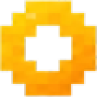
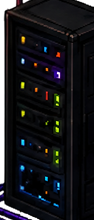
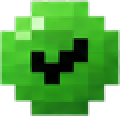

…
RADE OFFICE
LOADING THE ROOM
0%

–
✕
MODEL
–
CONTEXT
–
OUTPUT TODAY
–
INPUT TODAY
–
CACHE READ
–
CACHE WRITE
–
TURNS TODAY
–
SERVICE
–
TERMINAL
–
RESTART
STOP
START
LIVE LOGS
CLEAR
SYSTEM STATUS
▾
CPU USAGE
–
RAM USAGE
–
LOAD
–
DISK USED
–
UPTIME
–
BOTS SUMMARY
▾
SERVER
▾


All Systems
Operational